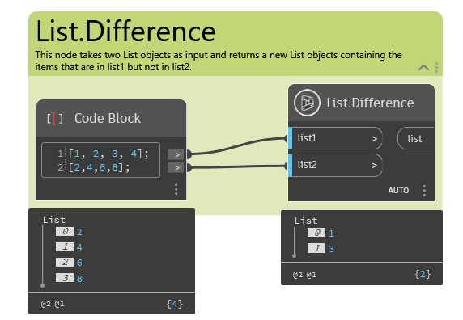
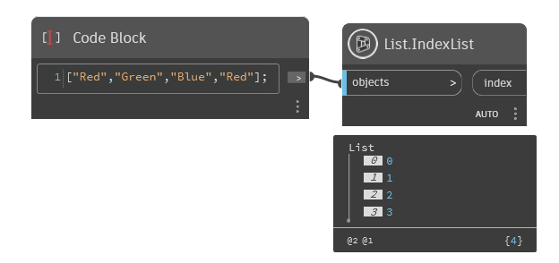
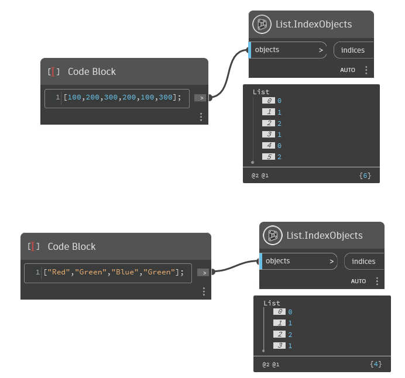
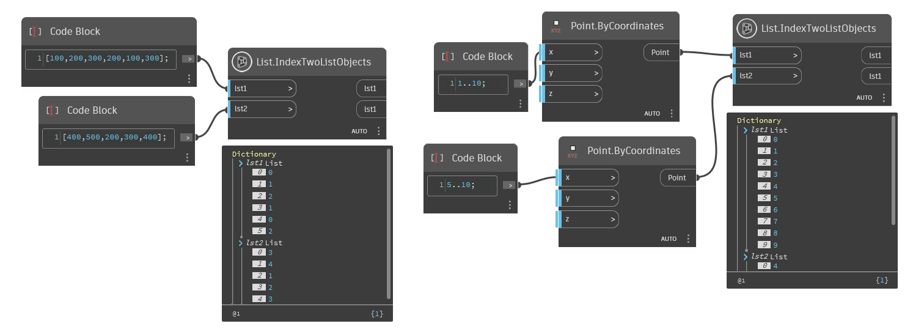
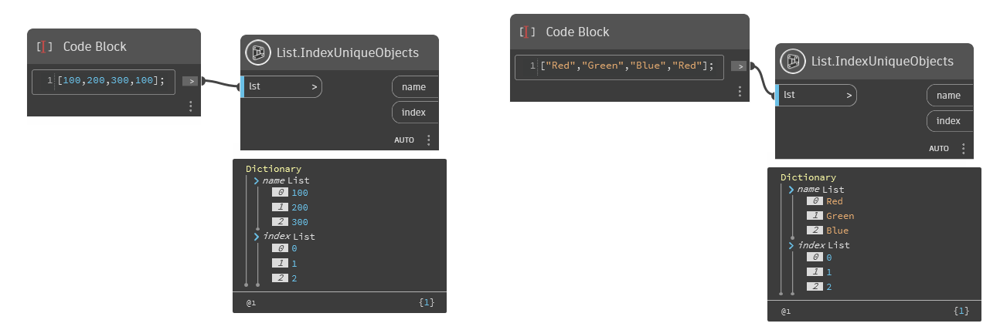
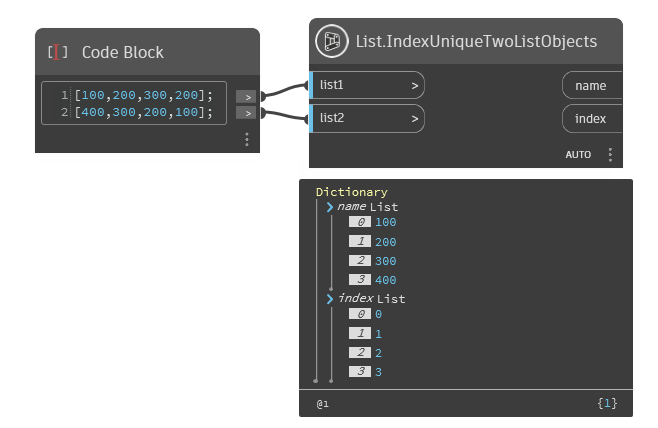
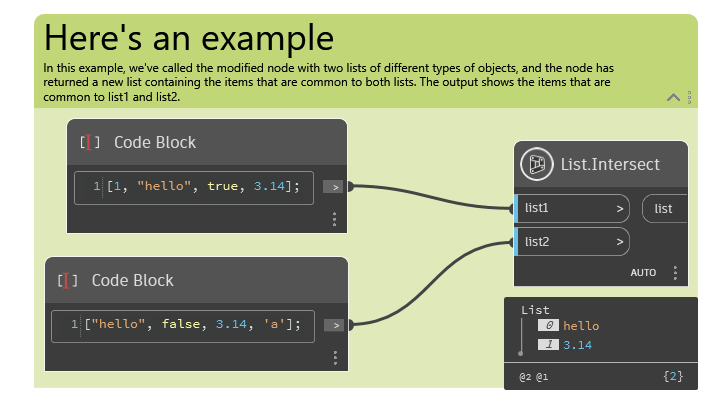
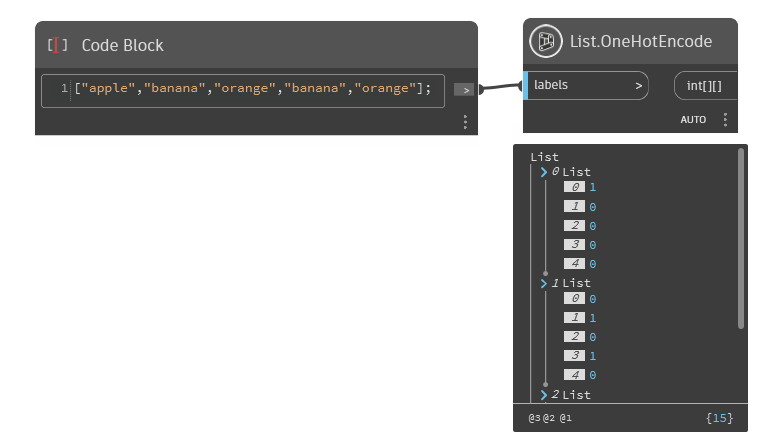

Class List
- Namespace
- OpenMEPSandbox.Core
- Assembly
- OpenMEPSandbox.dll
public class List- Inheritance
-
List
- Inherited Members
Methods
Difference(List<object>, List<object>)
Returns the items that are in the first list but not in the second list.
public static List<object> Difference(List<object> list1, List<object> list2)Parameters
Returns
- List<dynamic>
A new list containing the items that are in the first list but not in the second list.
Examples

List.Difference.dynIndexList(List<object>)
Returns a list of indices for a given list of objects.
public static List<object> IndexList(List<object> objects)Parameters
Returns
Examples

List.IndexList.dynIndexObjects(List<object>)
Takes a list of doubles and returns a new list where each element is replaced with the index of its first occurrence in the input list. If an element appears multiple times in the input list, the index of its first occurrence is used.
public static List<int> IndexObjects(List<object> objects)Parameters
Returns
Examples

List.IndexObjects.dynIndexTwoListObjects(List<object>, List<object>)
Takes two lists as input and returns two indexed lists where each element is replaced with the index of its first occurrence in the input list.
[MultiReturn(new string[] { "lst1", "lst2" })]
public static Dictionary<string, object> IndexTwoListObjects(List<object> lst1, List<object> lst2)Parameters
Returns
- Dictionary<string, object>
A Tuple containing the two indexed lists.
Examples

List.IndexTwoListObjects.dynIndexUniqueObjects(List<object>)
This method takes a list of objects as input and returns a dictionary mapping each unique string to its corresponding index in the list.
[MultiReturn(new string[] { "name", "index" })]
public static Dictionary<string, object> IndexUniqueObjects(List<object> objects)Parameters
Returns
- Dictionary<string, object>
name of object
Examples

List.IndexUniqueObjects.dynIndexUniqueTwoListObjects(List<object>, List<object>)
Takes two lists of strings as input, merges them, and returns a dictionary with unique names and indices.
[MultiReturn(new string[] { "name", "index" })]
public static Dictionary<string, object> IndexUniqueTwoListObjects(List<object> list1, List<object> list2)Parameters
Returns
- Dictionary<string, object>
name of object
Examples

List.IndexUniqueTwoListObjects.dynIntersect(List<object>, List<object>)
Returns the items that are common to two lists.
public static List<object> Intersect(List<object> list1, List<object> list2)Parameters
Returns
Examples

List.Intersect.dynOneHotEncode(List<string>)
Encodes a list of categorical values using one-hot encoding.
public static int[][] OneHotEncode(List<string> labels)Parameters
Returns
- int[][]
An array of arrays representing the one-hot encoded values.
Examples

List.OneHotEncode.dyn